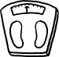

ABD'de yayımlanan popüler kadın dergilerinin birkaç temel özelliği var, bizim pek de aşina olmadığımız. Birincisi, malum, çeşitlilikleri. İçerikte değil, biçimde çeşitlilik. Benzer dergiler farklı farklı isimler altında. İkincisi, aylık olmaktan ziyade haftalık olmaları. Çabuk çabuk okunup çabuk çabuk yenileniyorlar. Üçüncüsü, nerede satışa sunuldukları. Ne kitapçılarda ne gazete bayilerinde, öncelikli olarak süpermarketlerde buluşuyor okurlarıyla bu dergiler. Bütün bir süpermarketi dolaşıp, ne kadarına gerçekten ihtiyaç duyduğunuz hayli şaibeli, bazılarını aklınızın ucundan dahi geçirmediğiniz onlarca yiyeceği arabanıza doldurduktan sonra, son olarak kasalara yaklaştığınızda birer ikişer adet bu dergilerden edinerek tamamlıyorsunuz alışverişinizi. Kadın dergileri ile yiyecekler arasındaki doğrudan ilişki tesadüfi değil; zira "olmak ya da olmamak" ikilemi, "yemek ya da yememek" ikilemi biçiminde tezahür etmiş bu dergilerde. Her şey yemek üzerine kurulu, ha bir de yememek! Bu haliyle kadın dergileri "el insaf" dedirtecek raddede birbirlerine benziyor. Sadece birbirlerine değil, aynı zamanda bir önceki ve daha önceki sayılarına. Değişen sadece isimler. Bir önceki sayıda Illinois'ten filanca ev hanımının ağzından nasıl 25 kilo verdiğini öğreniyorsunuz. Bir başka sayıda, bambaşka şehirden falanca ev hanımının. Herkesin anlatacak bir hikâyesi var. Bizde dillere persenk olmuş "Hayatım roman, anlatsam kitaplara sığmaz" inancı, burada "Hayatım roman, bari kitap yazayım" şiarına dönüşmüş. Alttan alta verilen mesaj hep aynı: "Ben başardım, siz de başarabilirsiniz!" değil, "Ben başardım, siz de başarmalısınız!" dahi değil, "Ben başardığıma göre, başaramayan akılsızdır, eksiktir!" mesajı. Bu yüzden bu ülkede, tıpkı Türkiye'de olduğu gibi, deneyip de bir türlü kilo veremeyen, yıllarca rejim yapıp bir arpa boyu yol kat edemeyen kadınlar büyük bir suçluluk ve eziklik duyuyor. Daha çok yemenin bir sebebi moral bozukluğu olduğu için, şişmanlık şişmanlığı, dışlanmışlık dışlanmışlığı getiriyor. İşin ironik yanı, her zaman azınlıklar dışlanır. Bu örnekte ise çoğunluklar. Zira kilolu kadınların oranı, zayıfların kat kat üstünde olduğu halde, iktidar tamamıyla ikincilerin lehinde.
Kilo vermeye başlamak için her şey bir vesile halini almış. Her kıytırık hadise, pek münasip bir vesile oluyor, ya da her özel gün, kısmetli bir milat diyet takvimlerine. Her tatil, her tarih yeni bir rejimi muştuluyor. Kabak rejimiyle kilo veremedinizse sorun yok, bir de kuşkonmaz rejimini deneyin bu hafta. Şükran Günü gelmeden 10 günde 10 kilo verebilir, Şükran Günü'ne bir gün kala hâlâ iki kilo eksilebilir, Şükran Günü geldi ama siz gene de nelere dikkat edeceğinizi bu dergilerden öğrenebilir; Şükran Günü geldi geçti olan oldu aşamasında ise Şükran Günü kilolarını verme diyetine başlayabilirsiniz. Yeter ki bu çarka daha önce de kapıldığınızı hatırlamayın. Daha önce de rejim yaptığınızı ve mutsuz olduğunuzu hatırlamayasınız ki, şimdi de rejim yapıp mutsuz olabileseniz. Bu yüzden işte kadın dergilerinin dördüncü temel özelliği: "unutkanlık". Carlos Fuentes boş yere ısrar etmemişti Amerika Birleşik Devletleri'ni Amnezi Birleşik Devletleri olarak değiştirmekte. Kadın dergileri her hafta "yeni" bir diyetle çıkabiliyorlarsa ortaya, bunu, "eski"lerini unutturabilmelerine borçlular. Bu sayede sunulabiliyor her diyet "mucizevi" diye.
Bedenimiz bizim dışımızda. Çevremizi kuşatmış soluk aldırmamacasına. Lav gibi aynı zamanda. Tek ve mutlak bir kaynaktan fışkırdığı halde, sanki her yerden boy vermiş ve her yere aitmişçesine, pervasızca dört bir yana yayılan, yoluna çıkan her şeyi istisnasız, ayırımsız eteklerinin altına alan, kendi dışında bir varlık kalmayıncaya değin tüm bir yaşam alanını kaplayan, yakıcı, kavurucu, fetih tutkunu lav gibi. Ellerimizde zıpkınlar, gözlerimizde su geçirmez gözlüklerle balıklama dalıp kusurlar-kabahatler-gafletler denizinin yedi kat dibine, avladığımız her özrü karaya çıkarıp didikliyoruz lime lime. Saldırmayı sıyırıp kavgaya atılmış bir kabadayı nasıl rasgele hasımlarının burunlarını, kulaklarını budarsa, biz de kesici dillerimizle cemiyet hayatına saldırıp, buduyoruz önümüze çıkanın falsosunu, marazını ve farklılıklarını. Kimse yeterince ince değil; kilo vermenin nerede duracağı belirsiz. Kadınlar bu dünyadaki değerlerinin dış görünüşlerine bağlı olduğuna inandırılmış bir kere. Mesele artık başkalarının ne düşündüğü dahi değil. Biziz kendimizin en acımasız hasmı. Biz durmuyoruz başkaları dur dediğinde dahi. Beden bir işkence. Bize bedenimiz aracılığıyla zulmeden toplumu, gene bedenimiz üzerinden cezalandırıyoruz, bedenimizi aç bırakarak.
Fakat işte bunca bombardımanın göbeğinde alternatif bir akım daha var gelişmekte olan. Şişman Güzeldir Hareketi. ABD'de şişman kadınlar, bilhassa son beş yıldır eskisinden çok daha aktif ve örgütlü durumdalar. Bir yandan kendi dergilerini çıkarıp internet sitelerini kuruyor, bir yandan da genel güzellik kalıplarını sorgulamaya ve sorgulatmaya çalışıyorlar. Bu arada ömrü billah çiroz kadınlardan hazzetmemiş erkekler de kendi internet siteleri aracılığıyla kampanyaya destek verip, "Şişman Güzeldir!" şiarına sahip çıkıyor. Kampanyanın önemli bir kısmı kime ve neye güzel dediğimizin içinde yaşadığımız kültür tarafından tanımlandığını hatırlatmak. Ne yazık ki bu sefer de, yüzeysel bir meraktır gidiyor öteki ülkelere yönelik. Batı-dışı toplumlar, "akıl-dışı" toplumlar olarak, Kaf Dağı'nın ardındaki masalsı diyarlar gibi çıkıyor karşımıza. "Araplar tombul kadın sever haremlerinde, Afrika'da filanca kabile genç kızları şişmanlatır evlenebilsinler diye" demenin kadınlara pek bir yararı olmadığı gibi, zaten mevcut olan kültürel önyargıları beslemekten öteye gidemediği de ortada.
Her şeye rağmen önemli bir kazanım Şişman Hareketi, bilhassa en radikal kanatlarından birini oluşturan ve kendine ait bir manifestosu bulunan ŞİŞMAN YERALTI HAREKÂTI. Bu hareketin kampanya metinlerinden birinde dendiği gibi, "Yıllar boyu kendimi bir başkası sanmaya çalıştıktan sonra, bugün hâlâ utanıyorum belki bedenimden, utanıyorum başkalarına benzeyememekten, kendim olmaktan, ama eskisinden çok daha az... giderek daha az..."
Boston